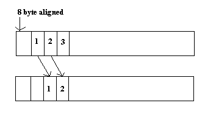

TI DSPLIB ModificationsWhen I wrote this page, I didn't know yet that I wouldn't be able to include the modified source. I'm allowed to distribute the original. But if I make any changes, I can only distribute object files or executables. So, I've removed the modified code. You'll just have to make do with the descriptions and the object files. While working on my thesis, I modified a couple of TI's DSPLIB optimized routines. The first one was the cache optimized mixed radix IFFT routine. I modified it so that the output is divided by four. This was done so that I could do two FFTs and IFFTs simultaneously by making use of the imaginary part of the time domain signal. It runs in the exact same number of cycles as the original. The second routine I modified was the dot product function. I'm going to go over the original and then talk about my changes. First notice that the prototype requires a pointer to the first array, then a pointer to the second, and then the length of the arrays. The arrays must be double word aligned. Next take a look at the assignments. The array length goes into A_cntarg (A6). The first array is A_x (A4), and the second is B_x (B4). A_x0 and A_x1 are adjacent entries in the array. The same goes for B_x0 and B_x1. The loop has been unrolled so that at each pass, prod0 is the even product and prod1 is the odd product. They are stored as a running sum in sum0 and sum1. The first cycle moves A_cntarg into A_cnt, which will be the counter. The next instruction stores a one in B_cntodd if the count is odd. Otherwise it's a zero. Then we enter the prolog. Since LDDW takes 5 cycles, we have to start loading data here. The first two elements of each array are loaded into A_x0 and A_x1 and B_x0 and B_x1. The counter is decremented. This is done four more times. The conditional [A_cnt] is used in case there are only a few elements in the array. If there are, we don't want to execute any of this code. Now, enter the loop. At this point, the first two elements of the array have been loaded and are ready for processing. The loop kernel loads another two elements which will be used five cycles later. The products are calculated and the sums totaled. Then the branch is executed and the counter decremented. There are a few things to note. The loads, branching, and counter decrement all have the [A_cnt] conditional so that we don't execute these instructions when the end of the array has been reached. The branching needs to complete six cycles early because it has five delay slots. The multiply instructions use both of the available cross paths. The add instructions aren't summing the current products. Those won't be available for four more cycles (three delay slots). This means on the first four cycles just sum zeros. After that, the products are ready from the first cycle for the loop. That is, the sums lag the multiplies by four cycles. The loop runs one extra time, and the last two products are discarded. This is done so that the epilog works correctly. The three cycles after the loop sum the last three products (excluding the one that is discarded). Note that the last sum doesn't actually sum if the number of elememnts are odd. The remaining cycles of the epilog sum the partial sums in several stages. The final result is put into A_result. The branch occurs five cycles before the end of the routine. It jumps back to the address stored in B3. For my needs, the data cannot be aligned on eight bytes. I modified the routine so that the first element of the first array starts at four bytes shifted from an eight byte alignment. The second array is eight byte aligned. The number of elements must be a multiple of four. Or the end of the arrays can be padded with zeros. The loop is unrolled once more so I can get an extra instruction in. This is necessary because the arrays are no longer aligned in memory. I have to temporarily store the second element loaded from the first array so that it can be used in the next iteration of the loop. The first cycle of the loop performs the branch. It also moves the second element, A_x1, into A_tmp. The next cycle decrements count by four. It also again puts A_x1 in A_tmp. This will be used on the next cycle to multiply the first element of B, B_x0. And A_x0 will be multiplied by B_x1. The prolog is similar to the original. But branches only happen every other instruction. And cnt isn't decremented on the last prolog cycle (or the loop would never end). The epilog drops one additional add cycle because this happens inside the loop. Also, the odd logic has been removed because I require the input array size to be a multiple of four.
Here are the object and header files. You call them just like the originals.
And the original source. |